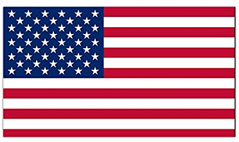

History of American Flag After the American Revolution began, the first, unofficial national flag—known as the Continental Colours (or, sometimes, as the Grand Union Flag, the Cambridge Flag, the Somerville Flag, or the Union Flag)—was hoisted on a towering 76-foot (23-metre) liberty pole at Prospect Hill in Charlestown (now in Somerville), Massachusetts, on January 1, 1776; it was raised at the behest of Gen. George Washington, whose headquarters were nearby. The flag had 13 horizontal stripes (probably of red and white or of red, white, and blue) and, in the canton, the first version of the British Union Flag (Union Jack). As the flag of the Continental Army, it flew at forts and on naval vessels. Another popular early flag, that of the 1765 Sons of Liberty, had only nine red and white stripes. Various versions of “D on’t Tread on Me” coiled-rattlesnake flags appeared on many 18th-century American colonial banners, including several flown by military units during the Revolutionary War. The version carried by the Minutemen of Culpeper County, Virginia, for example, included not only the rattlesnake and the “Don’t Tread on Me” motto but also Virginia patriot Patrick Henry’s famous words “Liberty or Death.”


Washington is the capital of the United States. With a population of just over half a million people. This is a small city by American standards. Washington was founded in 1791 and named after the first president of the United States, George Washington. It contains all government bodies, as well as the headquarters of such organizations as: the International Monetary Fund, the World Bank, the Inter-American Development Bank, the Organization of American States and the Pan American Health Organization.
Washington is the only city in the United States in which it is forbidden to build skyscrapers, and all buildings in the city are not higher than 12 floors, since it is legally established that the Capitol should remain the tallest building in the capital
Video about America
During the American Revolution, the legal separation of the thirteen colonies from Great Britain in 1776 actually occurred on July 2, when the Second Continental Congress voted to approve a resolution of independence that had been proposed in June by Richard Henry Lee of Virginia declaring the United States independent from Great Britain's rule.[5][6] After voting for independence, Congress turned its attention to the Declaration of Independence, a statement explaining this decision, which had been prepared by a Committee of Five, with Thomas Jefferson as its principal author. Congress debated and revised the wording of the Declaration, finally approving it two days later on July 4. A day earlier, John Adams had written to his wife Abigail:
The second day of July 1776, will be the most memorable epoch in the history of America. I am apt to believe that it will be celebrated by succeeding generations as the great anniversary festival. It ought to be commemorated as the day of deliverance, by solemn acts of devotion to God Almighty. It ought to be solemnized with pomp and parade, with shows, games, sports, guns, bells, bonfires, and illuminations, from one end of this continent to the other, from this time forward forever more.
Adams's prediction was off by two days. From the outset, Americans celebrated independence on July 4, the date shown on the much-publicized Declaration of Independence, rather than on July 2, the date the resolution of independence was approved in a closed session of Congress.
Historians have long disputed whether members of Congress signed the Declaration of Independence on July 4, even though Thomas Jefferson, John Adams, and Benjamin Franklin all later wrote that they had signed it on that day. Most historians have concluded that the Declaration was signed nearly a month after its adoption, on August 2, 1776, and not on July 4 as is commonly believed.
By a remarkable coincidence, Thomas Jefferson and John Adams, the only two signatories of the Declaration of Independence later to serve as presidents of the United States, both died on the same day: July 4, 1826, which was the 50th anniversary of the Declaration, Jefferson even mentioning the fact.[14] (Only one other signatory, Charles Carroll of Carrollton, survived them, dying in 1832.) Although not a signatory of the Declaration of Independence, James Monroe, another Founding Father who was elected as president, also died on July 4, 1831. He was the third President who died on the anniversary of independence. Calvin Coolidge, the 30th president, was born on July 4, 1872; so far he is the only U.S. president to have been born on Independence Day.

The project for the erection of a monument on Bedlow Island was approved by the US Congress only in 1877, and despite this, despite the fact that, according to the plan of the French, the unusual present should be ready by the hundredth anniversary of the signing of the US Declaration of Independence, that is, by July 4, 1876. However, the fundraising was delayed, and by this time only a brass hand with a torch was ready, which until the completion of work on the statue was sheltered in New York on Madison Square. By July 1878, Lady Liberty's head was ready. At the same time, the head is presented at an exhibition at the Museum of Arts and Crafts in Paris.It should be noted that funds for the construction of the monument were collected in all possible ways: balls, sports competitions, exhibitions and lotteries were organized. The eloquent Pulitzer, publisher of the New-York World newspaper, provided significant help in financing the construction of the monument.The first presentation of the finished Statue of Liberty took place on July 4, 1884 in France, after which the monument was dismantled and sent to the United States. The Statue of Liberty arrived in New York on July 17, 1885. The assembly of the monument took about 4 months. However, the official opening of the Statue of Liberty in New York by US President Grover Cleveland took place only on October 28, 1886. The opening ceremony was attended only by men. And this despite the fact that the Statue of Liberty is a symbol of democracy. As an exception, only Lessens' eight-year-old daughter and Bartholdi's wife were allowed on the island that day.By the way, Bedlow Island was officially renamed Liberty Island only in 1956, although Bartholdi suggested doing this back in the 19th century, 80 years before the event.